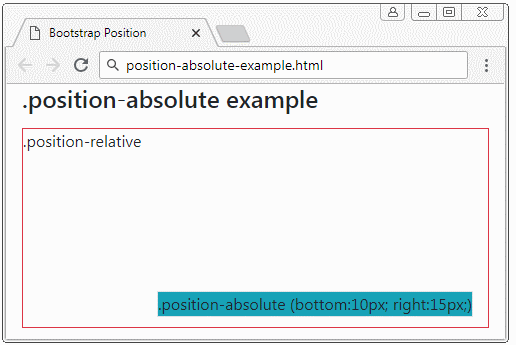

Phần tử được áp dụng lớp .position-absolute (vị trí tuyệt đối) sẽ tìm kiếm phần tử cha gần nó nhất mà phần tử này có {position: relative}. Sau khi tìm thấy nó sẽ thiết lập vị trí tương đối so với phần tử này. Nếu không tìm thấy nó sẽ thiết lập vị trí tương đối so với khung nhìn (Viewport) của trình duyệt.
